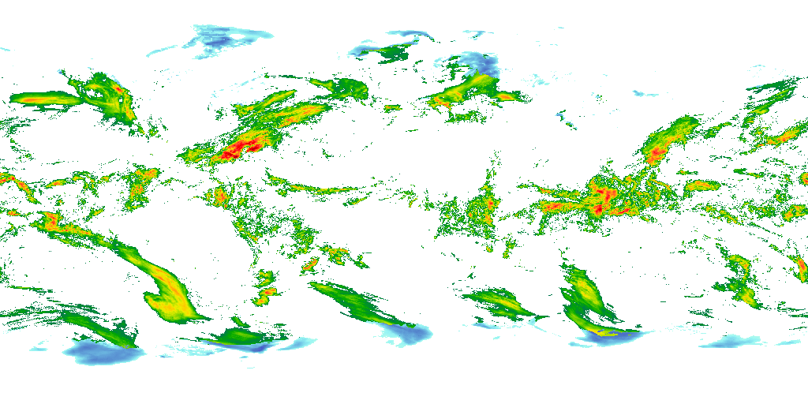
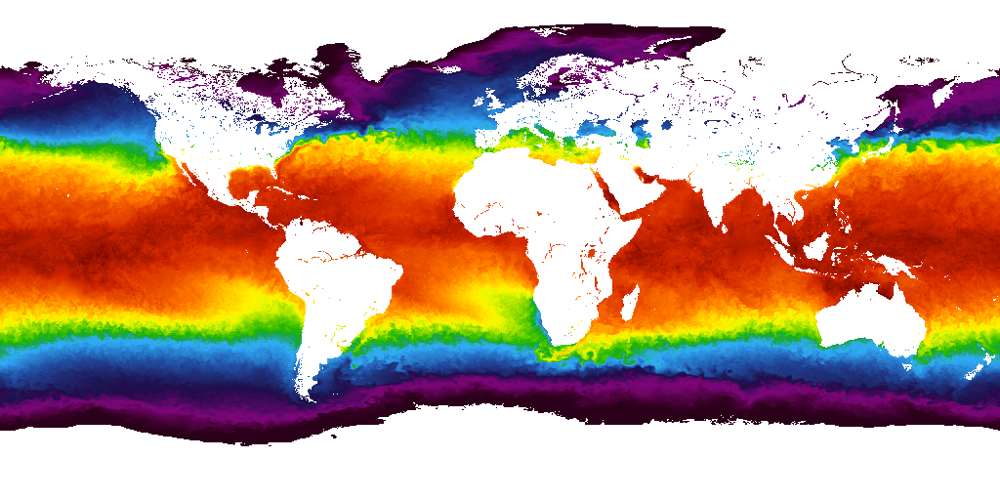
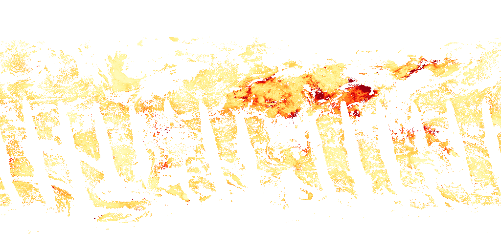
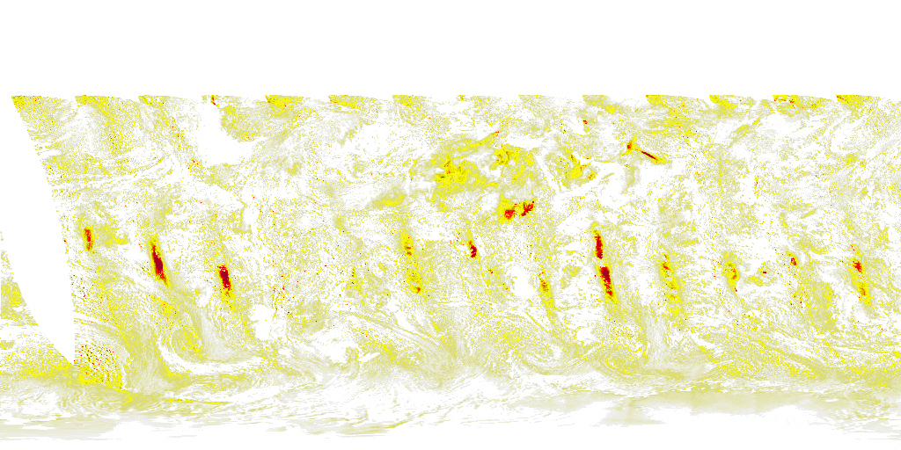

Pick a record.
Smoke and dust
Plays one sweep made only of the rise between the first and last moment. Places that did not change are silent.
What the picture looks like
Good to know about this record
Ask about one place.
Move over the map, or type a place, to hear one spot.
Is it smoky, hazy or raining near me?
A sound map of about 6,000 by 3,000 kilometres with your place in the middle. A soft chime rings as the sweep passes you. Then Earshot says how far away the most is, and in which direction.
The briefing
Can you hear the map?
Close your eyes. Three short clips, about a minute in all. Each clip is a real NASA map that you are not shown, and after each one you answer by ear. If you do not use a screen reader, turn on the page voice first so the questions are read to you.
Ready when you are. Low notes are the south, high notes are the north. The sound starts in your left ear, in the Pacific, and travels east.
- 0 listeners counted so far
- none yet answers right, by ear alone
- about 45 percent is what guessing would score
Built on what studies found.
Researchers have tested sound maps with blind and sighted listeners for more than fifteen years. Earshot is built on what they measured, including the parts that told us to change the design.
- 95 percent of geography tasks were completed by seven blind users with a sound map that combined a sweep, speech and keyboard exploring, with pitch carrying the values. With a spreadsheet they completed 33 percent. Zhao, Plaisant, Shneiderman and Lazar, 2008
- 35 people took part in a second study, 20 of them blind. They explored sound maps by keyboard or tablet, then picked the matching raised map with high accuracy. Blind and sighted groups did equally well. Delogu and others, 2010
- 3,184 people answered a survey after hearing NASA's own sonifications. Sighted and blind or low-vision listeners reported that they learned from them and enjoyed them. Arcand and others, 2024
Picture to sound in three steps.
One short formula turns any colour-coded map into the same kind of music, every time. It lives in one file that anyone can read and reuse.
Does the sound really carry the map?
0.0000 out of 1
This is a matched check. The second program knows the eight pitches and the timing, and it needs both ears of a clean recording. It shows that the grid of values survives the trip into sound and back. It does not cover the rhythm or the hiss, and it does not test loudspeakers, rooms or ears.
- Average error
- Cells checked
- Colour reading
What this check covers
It shows that the sound holds the map, for every record and for your own files. What listeners can do with sound maps is the subject of the studies above, and you can test your own ear in the listening check.
Sources: Zanella and others, "Sonification and Sound Design for Astronomy Research, Education and Public Engagement", Nature Astronomy, 2022. The eight latitude bands follow "Planetary Bands, Warming World", a 2015 string quartet by Daniel Crawford and Scott St. George, described in the Bulletin of the American Meteorological Society, 2017. Sweeping across a picture and turning position into pitch and brightness into loudness is the approach of NASA's own sonifications, such as "Caldwell 73" (Scientific Visualization Studio 13786), where the sweep turns like a radar and distance from the centre sets the pitch.
Take the evidence with you
The maps, as NASA draws them.
Every sound on this page starts as one of these pictures. Some are frames from the Earth Information Center, the wall of screens at NASA headquarters. Four are fetched from NASA's GIBS map service for the day you choose.




Bring your own map.
Drop in a whole-world map picture or a table of numbers. It is read inside your browser, sent nowhere, and gets the same voices, the same briefing and the same proof.
No file to hand? , then load it back in.
A sound is a map too. , drop the sound file in here, and Earshot draws the map again from the audio alone. A map can travel as a sound file that a blind person and a sighted person can both read.
Put Earshot inside your own product.
Checking whether the API is running here
no key yet
curl -X POST https://your-host/api/v1/brief \
-H "authorization: Bearer YOUR_KEY" -H "content-type: application/json" \
-d '{"record":"smoke","date":"2026-11-13","place":"Charlotte"}'
import * as Earshot from './engine/earshot.js';
const field = Earshot.decode(pixels, width, height, colourTable);
const grid = Earshot.toGrid(field.values, field.valid, width, height);
const levels = Earshot.toLevels(grid, 0, 4);
const audio = Earshot.sonify(levels, { seconds: 12, timbre: 'reed' });
const check = Earshot.compare(levels, Earshot.listenBack(audio));
console.log(check.r); // how much of the map the sound kept
download(Earshot.toWav(audio)); // a normal WAV file
MCP is a standard way to give an AI assistant a tool. With this server connected, any assistant that supports MCP can answer "is there smoke over Charlotte?" from NASA's map instead of guessing.
{ "mcpServers": { "earshot": { "command": "node", "args": ["mcp/earshot-mcp.mjs"] } } }
Straight answers.
What is Earshot, in one breath?
A jukebox that plays NASA's maps as music. Eight voices stand for eight bands of the planet from south to north. Where there is more smoke, rain, light or heat, that voice gets louder, and each kind of map has its own instrument.
Who is it for?
People who are blind or have low vision, who are shut out when information about the planet arrives as a picture. In Charlotte alone about 28,000 people are blind or have serious difficulty seeing even with glasses, and 8.6 million across the United States (US Census Bureau, American Community Survey, 2024). Worldwide in 2020, about 43 million people were blind and 295 million more had moderate or severe vision impairment (The Lancet Global Health, 2021). It also serves anyone who cannot look at a screen, and students who learn better by ear.
How would people actually get it?
Through tools they already use. A podcast feed delivers the area around their own city every day, as WAV sound files with the words underneath; some podcast apps, including Apple Podcasts, cannot play WAV yet. The website works with a screen reader, a keyboard or a phone. A teacher can run a twenty-minute class from the teachers' guide. "Play the whole jukebox" turns any speaker beside a screen, such as one next to the Earth Information Center wall, into a listening post. Developers can add it to their own apps through the open API, and AI assistants can read NASA's maps through the MCP server. Everything is free and open source.
Is the data real, and is it current?
Yes. Four records are fetched from NASA's GIBS map service for the day you choose. The newest day NASA has published is usually one or two days old, and the page always says which day you are hearing. The other records are frames of NASA's Earth Information Center visualizations. If NASA's service cannot be reached, the page says so and plays a saved copy.
How do I know the sound is right?
Three things stand behind it. The design follows published studies of sound maps with blind and sighted listeners, listed above. The page checks itself in front of you: a second program is given the audio alone and rebuilds the map, and the match is shown for every record and for your own files. And the listening check lets you test your own ear against the data.
Is it a weather or air-quality alert?
No. It tells you what NASA's map shows in broad strokes: 288 patches of the planet with four voices, or 576 with eight, not every pixel, with the exact value over any city on request. Satellites see the whole depth of the air, not the air at your door, and cloud leaves gaps. Earshot marks gaps with a hiss instead of filling them in.
Was AI used to build it?
Yes, heavily, and it is declared in the submission. An AI assistant (Claude, from Anthropic) researched the challenge and earlier work, proposed approaches and wrote most of the code and text. The team chose the challenge, the audience and the direction, and decided what stayed. No image, video or sound here was made by generative AI: every sound is computed from NASA data by an open formula you can read in one file, and no AI model runs inside the product.